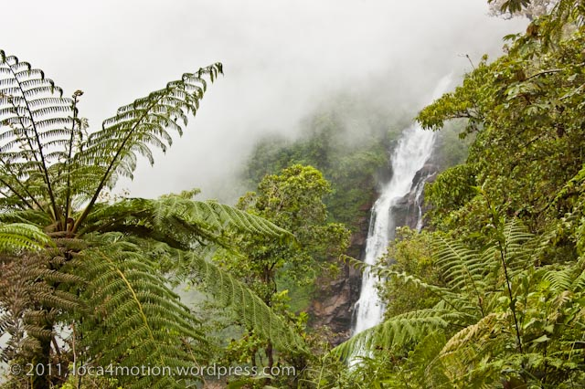
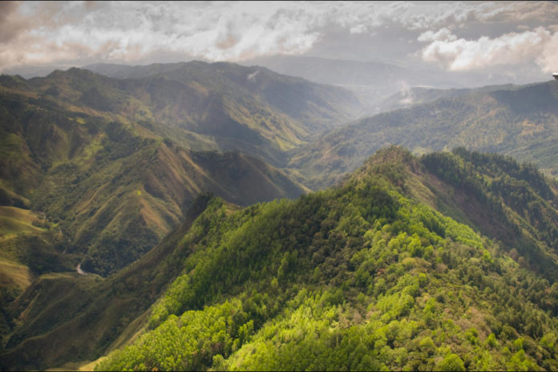
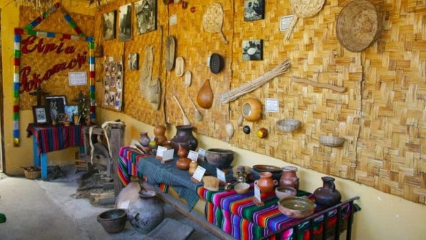
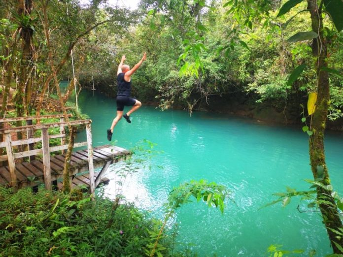

- Lugares Turisticos y/o interés: En Baja Verapaz podemos descubrir muchos rincones escondidos que guardan lugares poco explorados por visitantes, como los sitios arqueológicos. Sin olvidar las bellezas naturales y la enorme riqueza cultural que posee la gente del lugar.
- Salto de Chilascó: Es una de las cataratas más visitadas por los turistas, ya que es una de las cataratas más altas de Guatemala y de Centro América. Se encuentra ubicada en Baja Verapaz. En el trayecto de los senderos, se pueden apreciar otras caídas de agua como la de Lomo del Macho y el Rincón del Paraíso. Son muy atractivas y poseen pozas cristalinas en las que se puede nadar y disfrutar de aguas que refrescan el caluroso clima.

- Sierra de Chuacús: Es una cordillera demarcada en el Noroeste por el río Negro en Uspantán, que la separa de la Sierra de los Cuchumatanes. Su cresta mayor recorre la frontera entre los departamentos de El Quiché y Baja Verapaz a una altitud superior a los 2100 metros por más de 50 kilómetros. Su cumbre más alta alcanza 2504 metros sobre el nivel del mar.

- Museo Komoon: Es un sitio arqueológico en donde se encuentra lo referente a la historia de Baja Verapaz, con exposiciones fotográficas y cultura. Se encuentra ubicado en el municipio de Cubulco. Se encuentran exposiciones sobre el traje típico, piezas arqueológicas, medicina tradicional, artesanía, danzas y cofradías.

- Cataratas El Chupadero: Situado en San Jerónimo, es un sitio ecológico que se encuentra entre un frondoso bosque. Se pueden apreciar caídas de agua, recorridos por el bosque en donde se aprecian animales y avenes como pizotes, mapaches, ardillas, monos aulladores y quetzales. Las cataratas miden 360 metros y su nombre proviene porque el agua al caer es consumida pasando por un canal subterráneo y varios metros vuele a salir de entre las rocas continuando su recorrido natural.
